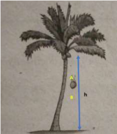

Energi Kinetik
Energi kinetik adalah energi yang dimiliki benda bergerak, yang ditandai dengan adanya kecepatan. Makin besar kecepatannya, energi kinetik akan semakin besar. Karena itu energi kinetik dapat Anda temukan pada gerak lurus, gerak parabola, gerak melingkar, dan gerak getaran.
Ilustrasi

Perhatikan gerak jatuh kelapa dari pohonnya! Manakah yang energi kinetiknya lebih besar, saat mencapai kedudukan A atau B? Betul, di B energi kinetiknya lebih besar karena ketika jatuh kecepatannya terus bertambah. Oleh karena itu energi kinetik kelapa akan lebih besar ketika mencapai titik B dibanding titik A.
Rumus energi kinetik adalah sebagai berikut :
$$Ek = \frac{1}{2}m\cdot v^2$$ \(Ek\) = energi kinetik (J)
\(m\) = massa benda (kg)
\(v\) = kecepatan benda (m/s)
Di titik A diketahui :
Perpindahan kelapa, \(h = 9,6 – 6,4 = 3,2 \text{ m}\)
Kecepatannya \(v=\sqrt{2g\cdot h}=\sqrt{2\times10\times3,2}= \sqrt{64} = 8 \text{ m/s}\).
Energi kinetik di A adalah \(Ek=1/2m.v^2 = \frac12 0,6.8^2 = 19,2\text{ joule}\)
Di titik B diketahui
Perpindahan kelapa, \(h = 9,6 – 5,55 = 4,05\text{ m}\)
Kecepatannya \(v=\sqrt{2g\cdot h} = \sqrt{2\times10\times4,05}= \sqrt{81} = 9 \text{ m/s}\).
Energi kinetik di A adalah \(Ek=\frac{1}{2}m\cdot v^2 = \frac12 0,6\cdot 9^2 = 24,3\text{ joule}\)
Rumus energi kinetik adalah sebagai berikut :
$$Ek = \frac{1}{2}m\cdot v^2$$ \(Ek\) = energi kinetik (J)
\(m\) = massa benda (kg)
\(v\) = kecepatan benda (m/s)
Contoh Soal
Sekarang mari kita hitung energi kinetik kelapa saat mencapai titik A dan B, bila massa kelapa \(0,6\) kg, tinggi \(h = 9,6\) m, tinggi di A = \(6,4\) m, dan tinggi di B = \(5,55\) m. Untuk menghitung energi kinetik dengan rumus \(Ek=1/2m.v^2\), harus memiliki data massa dan kecepatan. Kecepatan jatuh bebas kita hitung dengan rumus \(v=\sqrt{2g\cdot h}\), dalam hal ini h adalah perpindahan yang dihitung dari kedudukan awal (\(9,6\) m sesuai gambar). Bila \(g = 10 \text{ m/s}^2\), maka kita dapatkan:Di titik A diketahui :
Perpindahan kelapa, \(h = 9,6 – 6,4 = 3,2 \text{ m}\)
Kecepatannya \(v=\sqrt{2g\cdot h}=\sqrt{2\times10\times3,2}= \sqrt{64} = 8 \text{ m/s}\).
Energi kinetik di A adalah \(Ek=1/2m.v^2 = \frac12 0,6.8^2 = 19,2\text{ joule}\)
Di titik B diketahui
Perpindahan kelapa, \(h = 9,6 – 5,55 = 4,05\text{ m}\)
Kecepatannya \(v=\sqrt{2g\cdot h} = \sqrt{2\times10\times4,05}= \sqrt{81} = 9 \text{ m/s}\).
Energi kinetik di A adalah \(Ek=\frac{1}{2}m\cdot v^2 = \frac12 0,6\cdot 9^2 = 24,3\text{ joule}\)